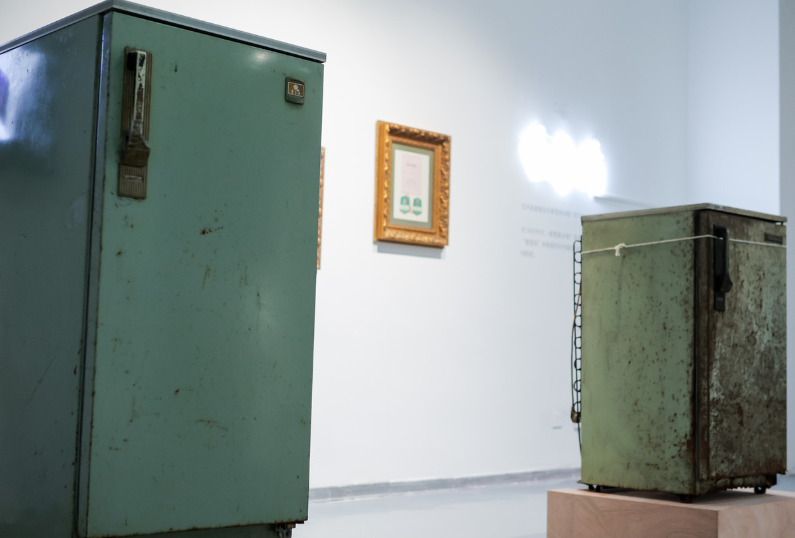
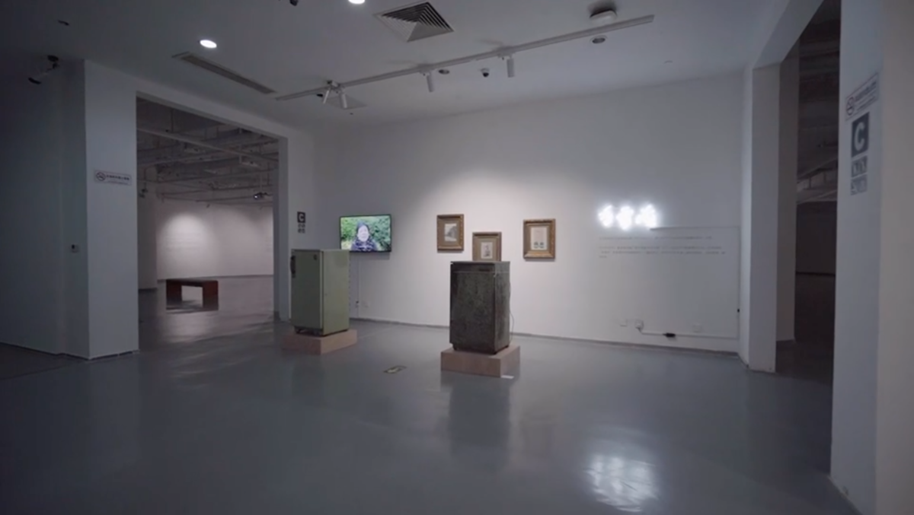
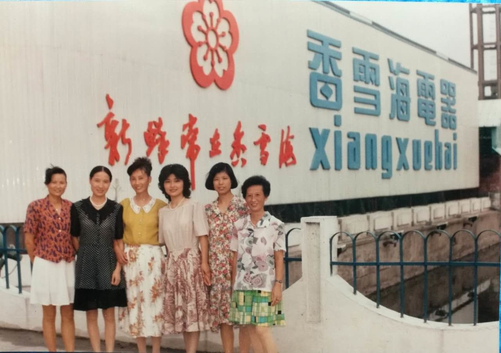

香雪海 | XIANG XUE HAI

艺术家: 石玩玩、金范九
Artist: Shi Wanwan, Jin Fanjiu
行为、综合媒介，旧香雪海单门冰箱、霓虹灯、录像、图像打印在相纸，冰箱尺寸为120x40x50cm，霓虹灯尺寸为60x25cm，录像时长1分42秒、彩色有声单屏幕、可变尺寸，图片可变尺寸，2016
Action, Mixed media art, The old refrigerator, Neon, Video, Photographs. Refrigerator:120x40x50cm、Neon: 60x25cm、Video: 1`42``、Single-channel\Color\Sound\Variable、Photographs:Variable, 2016
艺术家邀请当年香雪海冰箱厂的下岗老工人，将一台产于1987年的冰箱重新修好，点亮。
在1980年代，香雪海冰箱厂是中国最大的冰箱厂之一，也是苏州最重要的企业，后来倒闭。“香雪海”本身是苏州光福地区的一个著名景点，形容苏州冬天漫山美丽的梅花，白如雪海，转瞬即逝。
Veteran workers removed from the Xiangxuehai Refrigerator Plant engaged with repair a refrigerator which was manufactured in 1987. Then the refrigerator was powered on.
In 1980s, the Plant was one of the biggest among its class in China, and the most important enterprise in Suzhou. Every young worker would be proud of being a member of the Plant. The Plant was shut down afterwards. The word “Xiangxuehai” (fragrant snow sea) also refers to a famous scenic spot in Guangfu area, Suzhou, meaning that the beautiful plum blossoms spreading out everywhere over hills and dales in winter in Suzhou seem like a snow sea but may disappear in a moment.

金鸡湖美术馆，苏州
Jinji Lake Museum, Suzhou
N9艺术中心，苏州
N9 Art Center, Suzhou

工人们当年的合影，苏州
The pictures of the workers, Suzhou